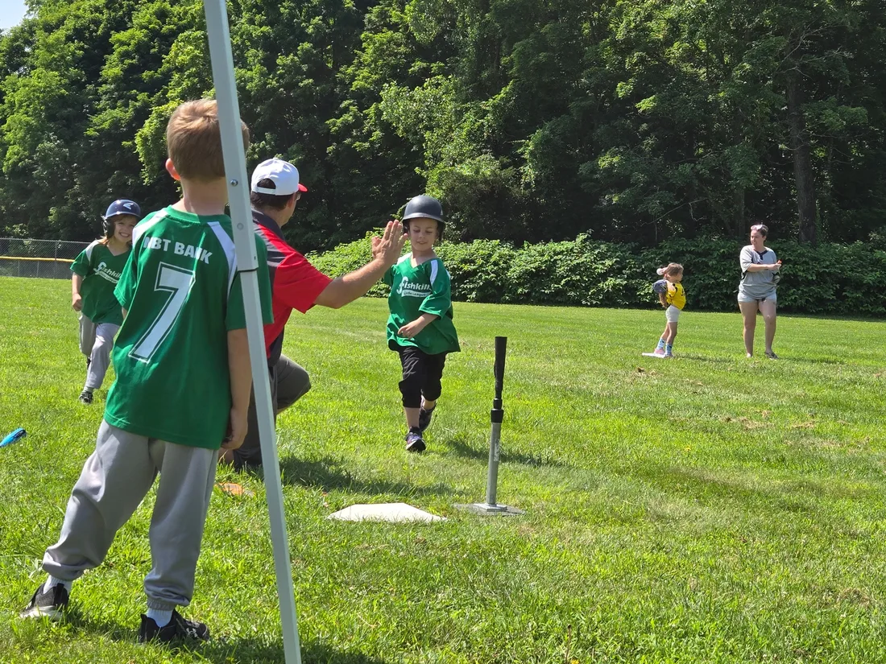
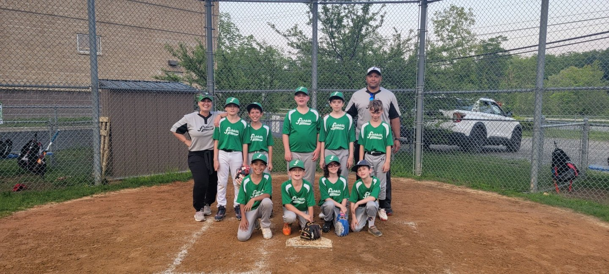

A Tradition Since 1954

Fishkill Little League has proudly served families across Southern Dutchess County since 1954. From Tee Ball through Senior divisions, our mission is to teach teamwork, sportsmanship, confidence, and leadership through baseball and softball.
Today we welcome players from Fishkill, Beacon, East Fishkill, Glenham, Brinckerhoff and neighboring communities. See which communities and schools we serve or check an address in the Little League Finder.
Programs
New to Little League? Start with our family guide.

Rookies
Coed FUN-damentals for age 4 and Tee Ball for ages 5–6. A first step toward baseball or softball.
Explore Rookies
Baseball
Coach Pitch, Minors, Majors, Intermediate, Junior and Senior Baseball.
Explore Baseball
Softball
Explore softball divisions from Coach Pitch through Senior.
Explore Softball
Winter Clinics
Indoor baseball and softball training for players enrolled in the spring season.
Explore Winter ClinicsSpring 2027 Registration
Opening Day
, weather permitting.
Rain date
Player evaluations
, noon to 6 p.m., at Brinckerhoff Elementary School.
Planning to attend Winter Clinics? Sign up by . Spots are limited, and players must be enrolled in the spring season to participate. See clinic registration.
Register by to help us form teams and order uniforms.
Spring registration remains open in divisions with space. If your player needs an alternate evaluation, email the league.
Spring registration closes on at 11:59 p.m. Eastern.
Spring Registration DetailsVolunteer Driven

Fishkill Little League is operated entirely by volunteers. Coaches, team parents, concession workers, field crews, board members, and sponsors make every season possible.
Every family helps build a stronger community.
Volunteer OpportunitiesMore Than Baseball and Softball
More than seventy years of history. Thousands of players. Hundreds of volunteers. Generations of Fishkill families.
Explore Our HistoryHelp build the next 75 years
Help Fishkill Little League raise $250,000 for equipment, field improvements and batting cages as we approach our 75th anniversary in 2029.
Meet Our Community Sponsors
Local businesses and community organizations help keep Fishkill Little League on the field.